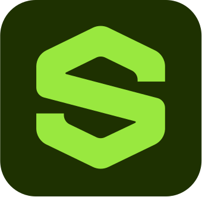

Нет новых задач
Выберите проект из списка слева или создайте новый

Нет задач
Нет файлов
Введите название нового проекта:
Введите имя нового файла:
Введите новое имя проекта:
Через запятую, например: svg, inx